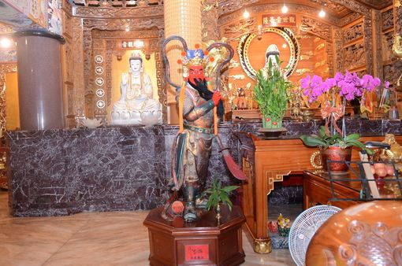

【清水寺供奉神明】
|
|

|  |
【神明換金身小典故】在前幾年，因為廟宇年久老舊，所以廟方在修建當中決定將舊神像要重做金身，文史工作者李俊福先生因為很心疼不捨這些神像用了那麼久就要這樣被淘汰，所以他就跟廟方商量，可不可以把舊神像給李先生，廟方就這樣順口答應，李先生馬上去跟別人借貨車及推高機，想把舊神像捐給林園國中保存；但是請神像的過程是很麻煩的，首先要先讓神明退神，奇特的是，在紅頭道士作法時，金紙居然自己冒煙、燃燒起來，這樣就表示神明同意自己要退神了；最後道士就拿著鋼片在舊神像的臉部刮了幾刀，讓舊金身破相；破相後，李先生開著機具來載運；但要先把金身提有點抬高度才有辦法在底部放入木棧板，運用繩索繞過橫樑將神像吊起來，並配合鐵管當滾筒，再以推高機拉到廟外。但神像實在太重了，於是請隔壁海軍陸戰隊8位阿兵哥幫忙，在抬高過程中不小心抬斷了神像的一隻腳掌，這時居然露出了草繩跟竹片，原來這些舊神像是泥塑的，李先生曾去訪問過老一輩，清水寺這些神像以前都是用草繩纏繞竹片然後塗土，之後修整，最後再貼上金箔；好不容易將神像搬運至林園高中，後來在第4天廟方居然說神明托夢不想讓神像在外面流浪，所以李先生只好再借機具運回清水寺，還給廟方。 |
|
【關公趣談】這關公的鬍子趣味性十足---根據廟方人員表示，關公的鬍子每年都在長，越長越長，於是廟方決定在106年初修剪，保持關公英挺樣貎，所以說，我們暫時看不到那長長的鬍鬚，有點可惜呢! |  |
資料來源： 1、//blog.xuite.net/k642853/twblog/158899574/track 2、文史工作者李俊福顧問所提供的故事 |
|
【清水寺供奉神明】-網頁製作心得 | 2年1班魏麒恩 |
|
一個清水寺雖然看起來不是很大，但是供奉的神如此眾多，真的是「麻雀雖小、五臟俱全」，實在意想不到竟然有如此神奇的故事，真讓我大開眼界了，真讓我還想了解更多故事!! |
|